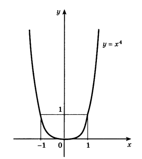
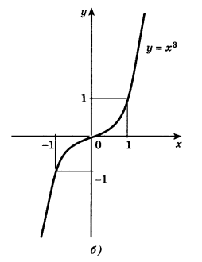
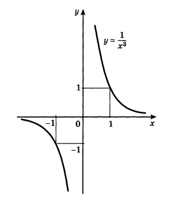
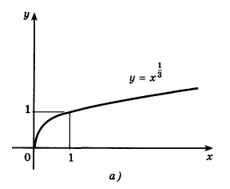
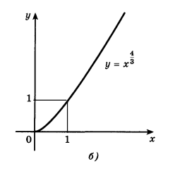

Определение функции $y=x^p$, зависимость свойств от показателя степени.
📘 Введение
Вы знакомы с функциями $y = x$, $y = x^2$, $y = x^3$ и т.д. Все эти функции являются частными случаями степенной функции. Как алгебраисты вместо записи повторяющихся множителей ($ААА...$) пишут степени ($A^n$), так Исаак Ньютон предложил запись для дробных показателей ($\frac{1}{a}$, $\frac{1}{a^2}$).
Определение
Функцией вида $y=x^p$, где $p$ — заданное действительное число, называется степенной функцией*.
Важно: Свойства этой функции зависят от свойств показателя степени $p$. Рассмотрим их подробно в зависимости от того, при каких значениях $x$ и $p$ имеет смысл степень $x^p$.
Общие понятия о функциях (стр. 40–41)
Термин
Определение
Ограничена снизу
Функция ограничена снизу на множестве $X$, если существует число $C_1$ такое, что для любого $x \in X$ выполняется неравенство $f(x)\geqslant C_1$. Это значит, что все точки графика лежат выше прямой $y=C_1$ или на ней. (Пример: $y=x^2-2x=(x-1)^2-1$ ограничена снизу числом $-1$).
Ограничена сверху
Функция ограничена сверху на множестве $X$, если существует число $C_2$ такое, что для любого $x \in X$ выполняется неравенство $f(x)\leqslant C_2$. Это значит, что все точки графика лежат ниже прямой $y=C_2$ или на ней. (Пример: $y=-x^2+2x+3=4-(x+1)^2$ ограничена сверху числом $4$).
Ограничена
Функция является ограниченной тогда и только тогда, когда она ограничена и сверху, и снизу. Для этого должно существовать число $C>0$ такое, что $|f(x)|
Наименьшее значение
Если существует такое значение $x_0$ из области определения, что для любого $x$ справедливо $f(x)\ge f(x_0)$, то говорят, что функция принимает наименьшее значение $y_0=f(x_0)$ при $x=x_0$. Например, у функции $y=x^2-2x$ это значение равно $-1$ при $x=1$.
Наибольшее значение
Аналогично определяется наибольшее значение.
(Эти термины иллюстрируются рисунками 6 и 7).
✏️ Свойства степенных функций в зависимости от показателя p
1. Показатель $r=2n$ — чётное натуральное число $(n\ge 2)$
Запись: $y=x^{2n}$
Область определения: Множество всех действительных чисел $\mathbb{R}$.
Множество значений: Неотрицательные числа $y\geqslant 0$.
Чётность/Нечётность: Чётная, так как $(-x)^{2n}=x^{2n}$. График симметричен относительно оси ординат.
Монотонность: Убывает на промежутке $(-\infty;0]$ и возрастает на $[0;+\infty)$.
Ограниченность: Ограничена снизу.
Экстремумы: Принимает единственное наименьшее значение $y=0$ при $x=0$.
График: Имеет вид параболы. Чем больше показатель, тем круче ветви уходят к краям.

2. Показатель $r=2n{-}1$ — нечётное натуральное число
Запись: $y=x^{2n-1}$
Область определения: $\mathbb{R}$.
Множество значений: $\mathbb{R}$.
Чётность/Нечётность: Нечётная, так как $(-x)^{2n-1}=-x^{2n-1}$. Симметрия относительно начала координат.
Монотонность: Возрастает на всей числовой прямой.
Ограниченность: Не ограничена ни сверху, ни снизу.
Экстремумы: Нет ни наибольшего, ни наименьшего значения.
График: Похож на кубическую параболу $y=x^3$ .

3. Показатель $r=-2n$ — отрицательное целое чётное число
Запись: $y=\dfrac{1}{x^{2n}}$
Область определения: $\mathbb{R}\setminus\{0\}$.
Множество значений: Положительные числа $y > 0$.
Чётность/Нечётность: Чётная.
Монотонность: Возрастающая на $(-\infty;0)$ и убывающая на $(0;+\infty)$. Ветви стремятся вверх при приближении к нулю слева и справа.
4. Показатель $r=-(2n{-}1)$ — отрицательное целое нечётное число
Запись: $y=\dfrac{1}{x^{2n-1}}$
Область определения: $\mathbb{R}\setminus\{0\}$.
Множество значений: Всё множество $\mathbb{R}$, кроме $y=0$.
Чётность/Нечётность: Нечётная.
Монотонность: Убывает на каждом из интервалов $(-\infty;0)$ и $(0;+\infty)$.
Ограниченность: Не ограничена.
Особые линии: Горизонтальная и вертикальная асимптоты совпадают с предыдущим случаем.

5*. Показатель $r$ — положительное нецелое число
Запись: $y=x^{\alpha}$, где $\alpha$ — несократимая дробь или иррациональное число.
Область определения: Только неотрицательные числа $x \ge 0$.
Множество значений: Только неотрицательные числа $y \ge 0$.
Чётность/Нечётность: Ни чётная, ни нечётная.
Монотонность: Всегда возрастающая на $[0; +\infty)$.
Ограниченность: Ограничена снизу.
Примеры графиков: $y=x^\frac{1}{3}=\sqrt[3]{x}$ (возрастает медленно вблизи нуля, затем ускоряется); $y=x^\frac{4}{3}$ (похоже на $y=x^2$, но более пологая ветвь возле нуля и более крутой рост вдали от него).


6*. Показатель $r$ — отрицательное нецелое число
Запись: $y=x^{-\alpha} = \frac{1}{x^{\alpha}}$, где $\alpha$ — несократимая дробь или иррациональное число.
Область определения: Только положительные числа $x > 0$.
Множество значений: Только положительные числа $y > 0$.
Чётность/Нечётность: Ни чётная, ни нечётная.
Монотонность: Убывает на $(0; +\infty)$.
Ограниченность: Ограничена снизу.
Особенности: Левый конец графика уходит в бесконечность при стремлении аргумента к нулю, правый — стремится к нулю при росте аргумента.
❗ Важные замечания об асимптотах (стр. 42–43)
Для функций с отрицательным показателем существуют особые прямые, к которым график бесконечно близко подходит, но никогда их не пересекает.
Горизонтальная асимптота: прямая $y=0$ (ось абсцисс), например, для $y=x^{-2n}$.
Вертикальная асимптота: прямая $x=0$ (ось ординат), например, для любой дробной функции $y=\frac{1}{x^k}$.
Пример: для $y=x^{-3}$ обе эти прямые являются асимптотами. Расстояние между точками графика и осью ординат становится сколь угодно малым при $x\to 0$.
📜 Примеры решения задач (стр. 45–46)
Задача 1. Найти наибольшее и наименьшее значения функции $y=x^6$ на отрезке $\left[-2;\frac{1}{2}\right]$.
Так как $y=x^6$ — чётная функция, достаточно рассмотреть промежуток $[0; \frac{1}{2}]$. На этом промежутке функция возрастает, поэтому минимальное значение достигается в точке $x=0$: $y_{\text{min}} = y(0)=0$.
Максимальное значение ищем среди концов исходного отрезка: $y(-2)=64$ и $y\left(\frac{1}{2}\right)=\frac{1}{64}$. Наибольшим является первое число: $y_{\text{max}} = y(-2)=64$.
Задача 2. Построить график функции $y=-(x+1)^5 + 2$.
Строится базовый график $y=x^5$. Затем последовательно выполняются преобразования: сдвиг вдоль оси абсцисс на 1 единицу влево → отражение относительно оси $OX$ → сдвиг вдоль оси ординат на 2 единицы вверх. Итоговый график изображён на рисунке 13.
Задача 3*. Найти точки пересечения графиков функций $y=\sqrt[3]{x}$ и $y=x^{4/5}$.
Составляем уравнение $\sqrt[3]{x} = x^{4/5}$. Домножив обе части на 3, получаем эквивалентную форму: $x^{1/3} = x^{4/5}$.
Левая часть уравнения имеет смысл при любых $x$, правая — только при $x \ge 0$. Следовательно, решаем его на полуоси $[0; +\infty)$.
Возводим обе части в куб: $x = x^{12/5}$. Переносим всё в одну сторону: $x(x^{7/5}-1)=0$.
Отсюда корни: $x_1=0$ и $x_2=1$. Проверкой убеждаемся, что оба корня подходят. Ответ: $(0;0)$ и $(1;1)$.